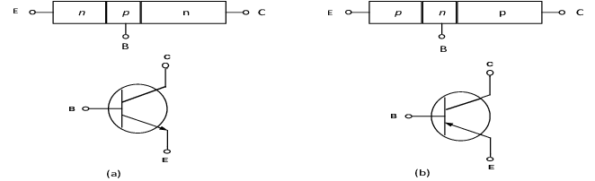
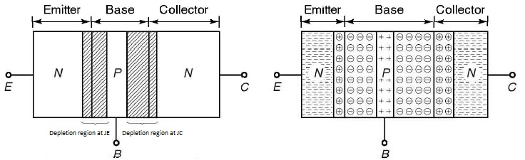
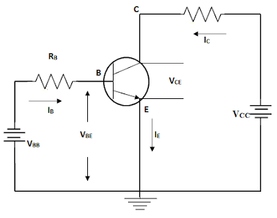
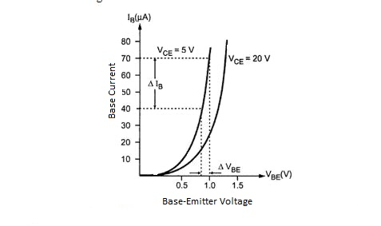
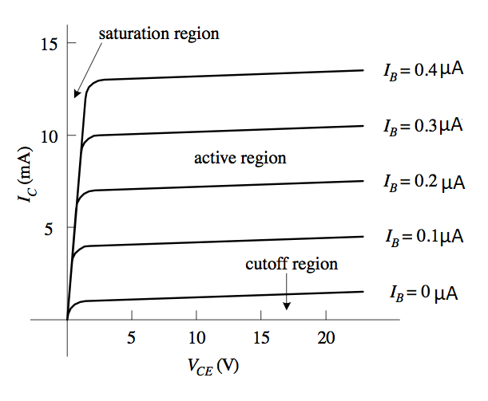

- In simple words Transistor, semiconductor device for amplifying electrical signals.
- According to the configuration It can be used for voltage amplification as well as current amplification.
- It is a three-terminal device: Base, Emitter and Collector and it can be operated in three configurations: common base, common emitter and common collector.
- The input signal of a small amplitude is applied at the base to get the magnified output of the signal at the collector. Thus provides amplification.
- This amplification of the signal is achieved by passing input current signal from a region of low resistance to a region of high resistance.
- This concept of transfer of resistance has given the name TRANSfer-reISTOR.
- Low operating voltage.
- Higher efficiency.
- Small size and ruggedness.
- Does not require any filament power.
- In Unipolar junction transistor the current conduction is only due to one type of carriers, majority carriers.
- In Bipolar junction transistor the current conduction is due to both the types of charge carriers, holes and electrons.
- The BJTs are of two basic types: n-p-n type, p-n-p type.
- When a transistor is formed by sandwitching a single p-region between two n-regions, it is n-p-n type transistor(a).
- When a transistor is formed by sandwitching a single n-region between two p-regions, it is p-n-p type transistor(b).
- The middle region of each transistor type is called the base of the transistor.
- The remaining two regions are the emitter and the collector.
- A transistor has two p-n junctions.
- One junction is between the emitter and the base and is called Emitter Base junction or simply Emitter junction JE.
- The other is between base and collector which is called collector junction JC.
- Thus, transistor is like two p-n junction diodes connected back-to-back.
- It is the region to the left end which supply free charge carriers, electrons in n-p-n or holes in p-n-p transistors.
- These majority carriers are injected to the middle region i.e. electrons in the p region of n-p-n or holes in the n region of p-n-p transistor.
- Emitter is a heavily doped region to supply a large number of majority carriers into the base.
- The majority carriers from the emitter region are injected into this region.
- This region is very thin and lightly doped.
- It is the region to right end where charge carriers are collected.
- It is also heavily doped but slightly lesser than that of the emitter.
- The region-area of the collector is slightly more than that of the emitter.
- An unbiased transistor means a transistor with no external voltage (biasing) is applied.
- Obviously, there will be no current flowing from any of the transistor leads.
- Since transistor is like two p-n junction and connected back to back, there are depletion regions at both the junctions, emitter junction and collector junction.
- During diffusion process, depletion region penetrates more deeply into the lightly doped side in order to include an equal number of impurity atoms in each side of the junction.
- Depletion region at emitter junction penetrates less in heavily doped emitter and extends more in the base region.
- Similarly, depletion region at collector junction penetrates less in the heavily doped collector and extends more in the base region.
- As collector is slightly less doped than the emitter, the depletion layer width at the collector junction is more than the depletion layer width at the emitter junction.
- Active region
- Saturation region
- Cutoff region
- The base to emitter junction is forward biased by the DC source VEE.Thus, the depletion region at this junction is reduced.
- The collector to base junction is reverse biased,increasing depletion region at collector to base junction.
- The forward biased EB junction causes the electrons in the n-type emitter to flow towards the base.
- This constitutes the emitter current IE.
- As these electrons flow through the p-type base,they tend to combine with holes in p-region(base).
- The base region is very thin and lightly doped.The light doping means that the free electrons have a long lifetime in the base region.
- The very thin base region means that the free electrons have only a short distance to go to reach the collector.
- For these two reasons,very few of the electrons injected into the base from the emitter recombine with holes to constitute base current,IB.
- The remaining large number of electrons cross the base region and move through the collector region to the positive terminal of the external dc source.
- In this configuration input is applied between base and emitter, and output is taken from collector and emitter.
- Here, Emitter of the transistor is common to both, input and output circuits, and hence the name common emitter configuration.
- It is the curve between input current IB and input voltage Vbe.
- The base current is taken along Y-axis and Base-Emitter voltage along X-axis.
- As the input to a transistor in CE configuration is between the Base-to-Emitter junction, the CE input characteristics resembles a family of forward-biased diode curves.
- After the cut-in Voltage the base current(IB) increase rapidly with small increase in Base emitter voltage(VBE).
- After the cut-in voltage the base current IB increases rapidly with small increase in emitter voltage.
- It means that dynamic input resistance is small in CE configuration.
- It is the ratio of change in base-emitter voltage to the resulting change in base current at constant collector emitter voltage.
- For a fixed value of VBE, IB decreases as VCE is increased. A larger value of VCE results in a large reverse bias at collector-base p-n junction.
- This characteristics show the relation between the collector current Ic and the collector voltage VCE, for various fixed values of IB.
- This characteristics is often called collector characteristics.
- From the output characteristics we can see that change in collector-emitter voltage causes the little change in the collector current for constant base current. Thus the output dynamic resistance is high in CE configuration.
- The output characteristics of common emitter configuration consists of three regions: Active, Saturation, and Cut-off.
- In the active region, the collector base junction is reverse-biased. For every transistor there is limit on the maximum value for this reverse bias voltage.
- If this limit is exceeded the breakdown occurs in the transistor. This effect is commonly known as punch through effect.
- This large current may damage transistor. Hence in practice, maximum collector emitter voltage rating should never be exceeded for the safe operation of the transistor.
Transistor
Advantages of Transistor
Before transistor, the amplification was achieved by using vacuum tubes as an amplifier. Now-a-days vacuum tubes are replaced by transistors because of the following advantages
Unipolar Junction Transistor
Bipolar Junction Transistor
Construction of NPN and PNP transistor

Emitter
Base
Collector
Principle of operation of Transistors
Unbiased Transistor

Biased Transistor
In order to operate transistor properly as an amplifier, it is necessary to correctly bias the two PN junctions with external voltages. Depending upon external bias voltage polarities used, the transistor works in one of the three regions,
| Region | Emitter base junction | Collector base junction | Application |
|---|---|---|---|
| Active | Forward biased | Reverse biased | Amplifier |
| Cut-off | Revers biased | Forward biased | Open switch |
| Saturation | Forward biased | Forward biased | Closed switch |
Operation of NPN Transistor
BJT in Common-Emitter Configuration

Input characteristics of CE Configuration

Output characteristics of CE Configuration
